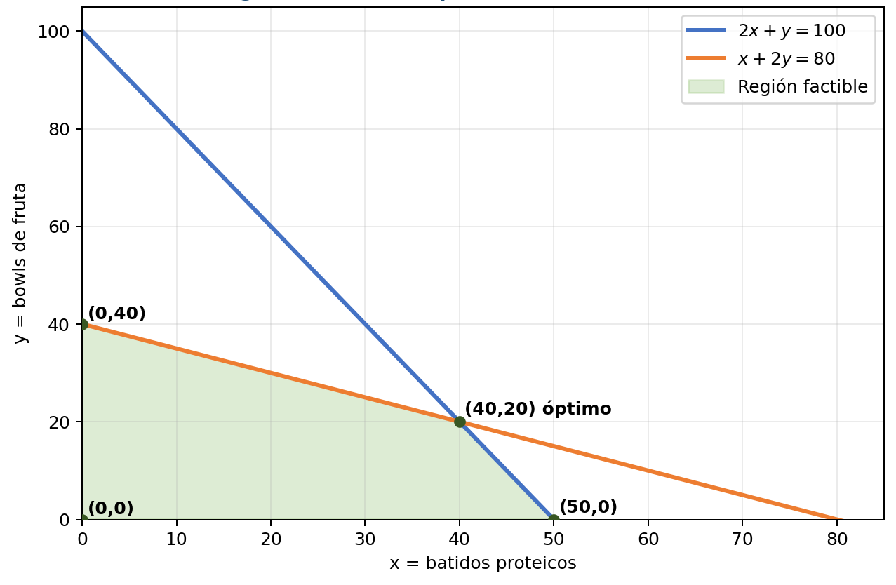
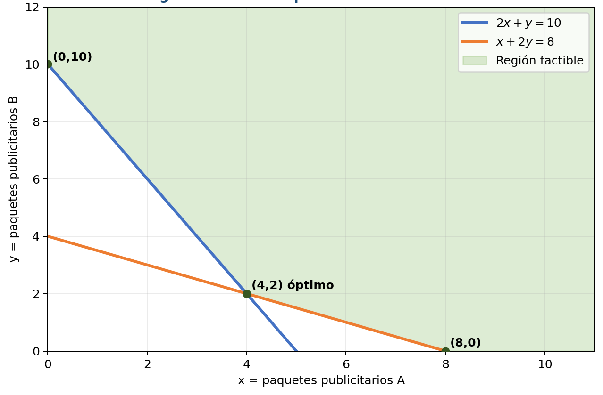

Variables de decisión
Cantidades que queremos determinar.
Módulo 1 · Investigación de Operaciones
Maximización y minimización mediante la región factible y sus vértices.
Fundamentos
El método gráfico permite resolver problemas de programación lineal con dos variables de decisión. Consiste en representar las restricciones en un plano cartesiano, identificar la región factible y evaluar sus vértices para encontrar la mejor solución.
Cantidades que queremos determinar.
Expresión que buscamos maximizar o minimizar.
Condiciones que deben respetarse.
Limita las variables a valores iguales o mayores que cero.
Conjunto de puntos que cumplen todas las restricciones.
Solución factible que produce el mejor valor del objetivo.
Ejercicio 1
Un gimnasio vende batidos proteicos y bowls de fruta con yogur.
| Dato por producto | Batido | Bowl | Disponible diario |
|---|---|---|---|
| Ingredientes | 2 unidades | 1 unidad | 100 unidades |
| Tiempo de preparación | 1 unidad | 2 unidades | 80 unidades |
| Ganancia | Q12 | Q18 | — |
x: cantidad de batidos proteicos.
y: cantidad de bowls.
Para 2x + y = 100:
Si y = 0: 2x = 100 → x = 50 → (50, 0).
Si x = 0: y = 100 → (0, 100).
Para x + 2y = 80:
Si y = 0: x = 80 → (80, 0).
Si x = 0: 2y = 80 → y = 40 → (0, 40).
De la primera ecuación despejamos y = 100 − 2x. Sustituimos en la segunda:
Después sustituimos x = 40:
La intersección es (40, 20).
Probamos el origen:
Ambas desigualdades se cumplen. Seleccionamos el lado de cada recta que contiene el origen, dentro del primer cuadrante.
Los vértices son (0, 0), (0, 40), (40, 20) y (50, 0).

| Vértice | Sustitución en Z = 12x + 18y | Ganancia |
|---|---|---|
| (0, 0) | 12(0) + 18(0) | Q0 |
| (0, 40) | 12(0) + 18(40) | Q720 |
| (40, 20) | 12(40) + 18(20) | Q840 |
| (50, 0) | 12(50) + 18(0) | Q600 |
El gimnasio debe preparar 40 batidos y 20 bowls diarios.
Ingredientes: 2(40) + 20 = 100 unidades.
Tiempo: 40 + 2(20) = 80 unidades.
Ejercicio 2
Un gimnasio desea promocionar una membresía mediante dos paquetes publicitarios.
| Dato por paquete | Paquete A | Paquete B | Requisito mínimo |
|---|---|---|---|
| Alcance | 2 unidades | 1 unidad | 10 unidades |
| Interacción | 1 unidad | 2 unidades | 8 unidades |
| Costo | Q40 | Q50 | — |
x: cantidad de paquetes A.
y: cantidad de paquetes B.
Usamos ≥ porque la campaña debe alcanzar, como mínimo, los requisitos establecidos.
Para 2x + y = 10:
Si y = 0: 2x = 10 → x = 5 → (5, 0).
Si x = 0: y = 10 → (0, 10).
Para x + 2y = 8:
Si y = 0: x = 8 → (8, 0).
Si x = 0: 2y = 8 → y = 4 → (0, 4).
Despejamos y = 10 − 2x y sustituimos en la segunda ecuación:
Después sustituimos x = 4:
La intersección es (4, 2).
El origen no cumple los requisitos:
Seleccionamos la zona que satisface simultáneamente ambas desigualdades y la no negatividad. La región se extiende hacia valores mayores de las variables.
Sus vértices son (0, 10), (4, 2) y (8, 0).

| Vértice | Sustitución en Z = 40x + 50y | Costo |
|---|---|---|
| (0, 10) | 40(0) + 50(10) | Q500 |
| (4, 2) | 40(4) + 50(2) | Q260 |
| (8, 0) | 40(8) + 50(0) | Q320 |
El gimnasio debe contratar 4 paquetes A y 2 paquetes B.
Alcance: 2(4) + 2 = 10 unidades.
Interacción: 4 + 2(2) = 8 unidades.
Cierre
El método gráfico muestra cómo las restricciones delimitan las decisiones posibles. La representación de las rectas, la identificación de la región factible y la evaluación de sus vértices permiten resolver e interpretar problemas de maximización y minimización con dos variables.